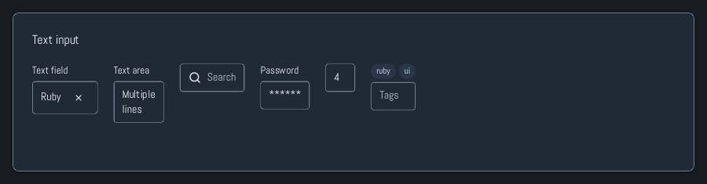

Browse documentation
Text inputs
Collect free-form text with single-line, multiline, search, password, numeric, and tag controls.
Import
Load the optional component layer before using the examples below.
Ruby
require "zaniah/ui"Basic fields
Use a visible label for form fields. TextField supports a placeholder, error, counter, prefix, suffix, and clear action.
Rendered example

Ruby
Zaniah::UI::TextField.new("Ruby", label: "Name", clearable: true)
Zaniah::UI::TextArea.new("Several lines", label: "Notes", rows: 3)
Zaniah::UI::SearchInput.new("", placeholder: "Search")
Specialized fields
PasswordInput masks its value. NumberInput enforces optional bounds and increments. TagInput reports a list of tags.
Ruby
Zaniah::UI::PasswordInput.new("", label: "Password")
Zaniah::UI::NumberInput.new(4, min: 0, max: 10)
Zaniah::UI::TagInput.new(%w[ruby ui], placeholder: "Tags")
API summary
Constructor options and behaviors are drawn from the component reference.
| Component | Constructor and methods | Variants or behavior |
|---|---|---|
TextField | (value, placeholder:, label:, prefix:, suffix:, error:, max_length:, clearable:) | IME, selection, counter |
TextArea | TextField plus rows: | multiline/wrapped |
SearchInput | TextField options | search + clear icons |
PasswordInput | TextField options | masked display |
NumberInput | TextField plus min:, max:, step:; increment, decrement | numeric |
TagInput | (tags, separator:, ...); on_tags_change | badge list + editor |
Accessibility
Labels and errors are associated with their fields. Multiline input exposes a multiline textbox; search exposes a searchbox.
| Component | Semantic role |
|---|---|
TextField | textbox |
TextArea | textbox/multiline |
SearchInput | searchbox |
PasswordInput | textbox |
NumberInput | textbox |
TagInput | textbox |